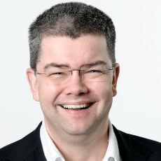
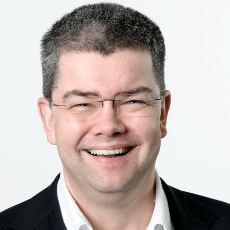

Organization
General Chair
|  | Andreas Zeller, Saarland University, Germany |
Program Chair
| Thomas Zimmermann, Microsoft Research |
Local Chair
 |
Sudipta Chattopadhyay, Saarland University, Germany |
|  | Andreas Zeller, Saarland University, Germany |
| Thomas Zimmermann, Microsoft Research |
|
Sudipta Chattopadhyay, Saarland University, Germany |